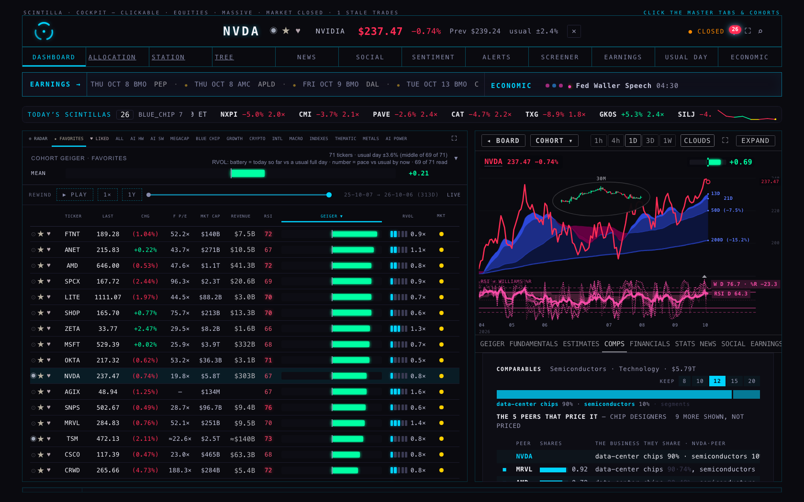
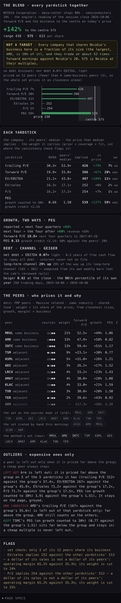
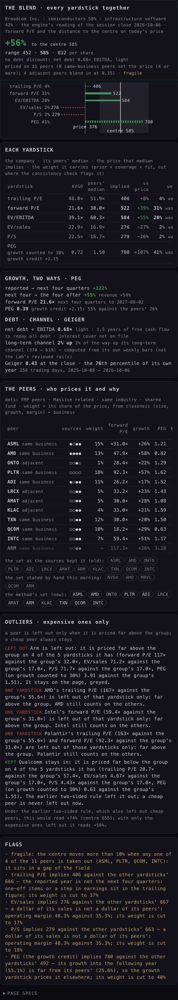
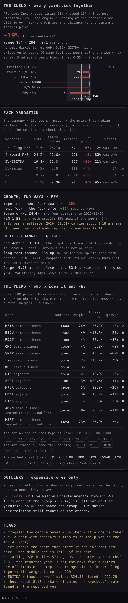
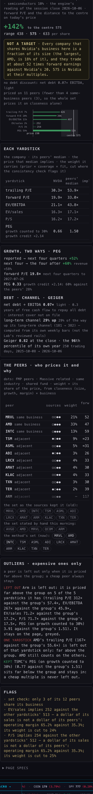
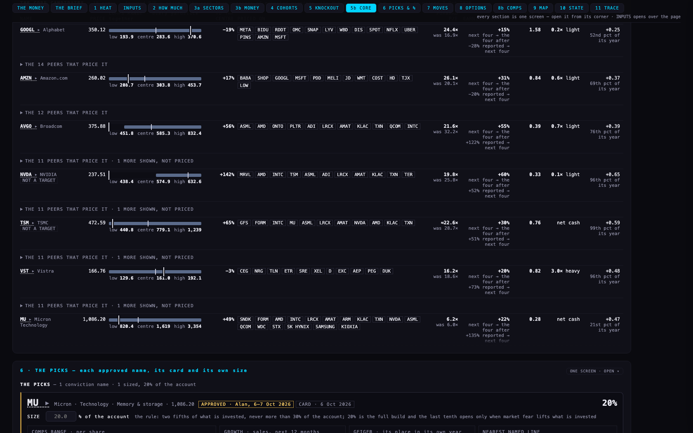
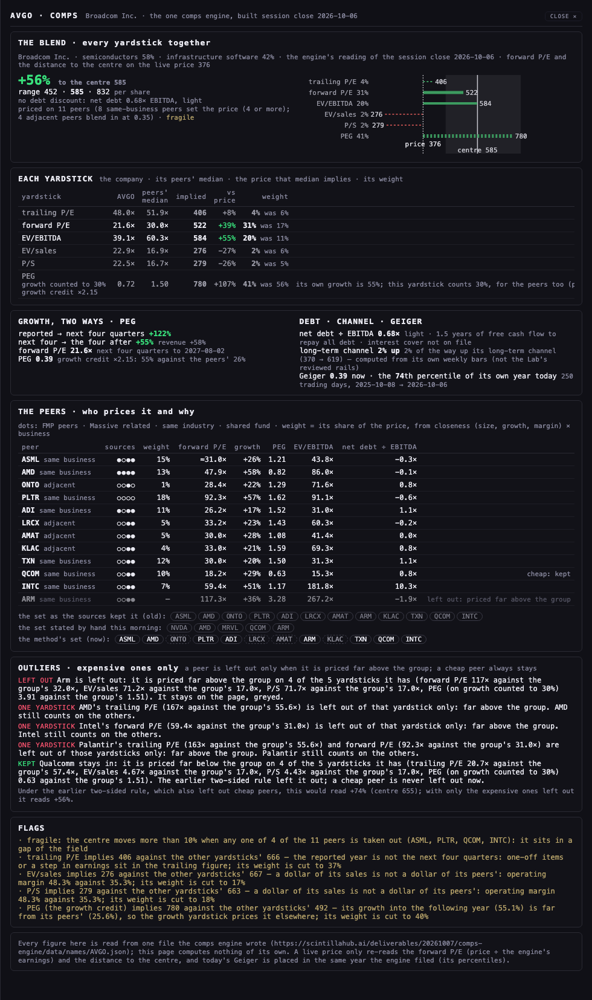
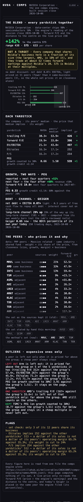
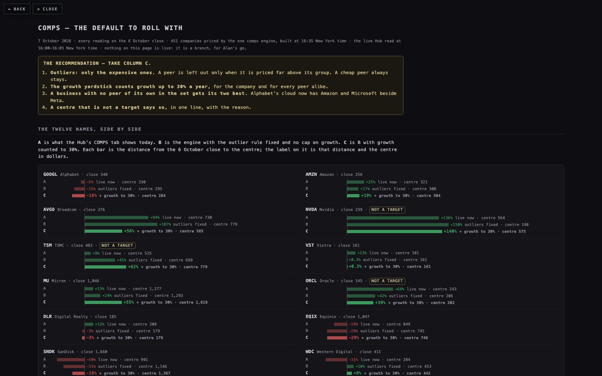
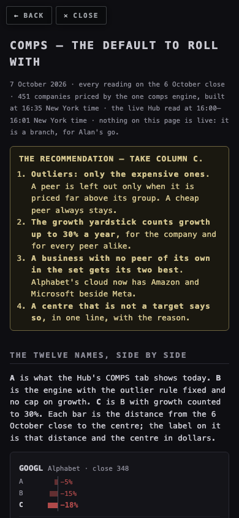

COMPS — THE DEFAULT TO ROLL WITH
7 October 2026 · every reading on the 6 October close · 451 companies priced by the one comps engine, built at 16:35 New York time · the live Hub read at 16:00–16:01 New York time · nothing on this page is live: it is a branch, for Alan's go.
- Outliers: only the expensive ones. A peer is left out only when it is priced far above its group. A cheap peer always stays.
- The growth yardstick counts growth up to 30% a year, for the company and for every peer alike.
- A business with no peer of its own in the set gets its two best. Alphabet's cloud now has Amazon and Microsoft beside Meta.
- A centre that is not a target says so, in one line, with the reason.
THE TWELVE NAMES, SIDE BY SIDE
A is what the Hub's COMPS tab shows today. B is the engine with the outlier rule fixed and no cap on growth. C is B with growth counted to 30%. Each bar is the distance from the 6 October close to the centre; the label on it is that distance and the centre in dollars.
| name | close | A · live now | B · outliers fixed, no cap | C · B + growth to 30% | C against A, in one sentence |
|---|---|---|---|---|---|
| GOOGL Alphabet | 348 | −5% centre 330 the page at the close: 328 at 350, −6.5% | −15% centre 295 | −18% centre 284 | Amazon (20% of the weight) and Microsoft (23%) now sit beside Meta (24%); the growth yardstick weighs most (45%) and Alphabet grows slower than its peers (15% a year against 24%), which alone takes the centre from 327 (−6%) down to 284. |
| AMZN Amazon | 256 | +25% centre 321 the page at the close: 321 at 260, +23% | +17% centre 300 | +19% centre 304 | The Chinese retailers and the two other clouds price it, and a 5% debt discount comes off the centre; before the discount it reads +25%, the live figure. |
| AVGO Broadcom | 376 | +94% centre 730 the page at the close: 722 at 377, +92% | +107% centre 779 | +56% centre 585 | Arm is left out for being priced far above the group and Qualcomm stays although it is cheap (with Qualcomm out it would read +74%); its 55% growth is counted to 30% (at 40 it reads +103%, with no cap +107%). |
| NVDA Nvidia | 239 | +136% centre 564 the page at the close: 563 at 237, +137% | +150% centre 598 | +140% centre 575 NOT A TARGET | Hardly moves, and no cap moves it (+140% at 30, +140% at 40, +150% with none): AMD, Marvell and Intel are the only companies in its business here, each a fraction of its size and priced at 48–59 times forward earnings against its 20. It carries the line “not a target”. |
| TSM TSMC | 482 | +9% centre 525 the page at the close: 522 at 472, +11% | +45% centre 699 | +62% centre 779 NOT A TARGET | The live page prices it on a set written by hand (two foundries and six of its customers). The method finds only two foundries, GlobalFoundries and Intel, so the whole chip set prices it and Intel alone carries 44% of the weight. Marked fragile and “not a target”. |
| VST Vistra | 161 | +13% centre 181 the page at the close: 183 at 167, +9.8% | +0.3% centre 161 | +0.3% centre 161 | The same four independent power producers price it; the difference is the 8% debt discount (net debt 3× EBITDA). Before the discount it reads +9%. |
| MU Micron | 1,046 | +13% centre 1,177 the page at the close: 1,161 at 1,087, +6.8% | +24% centre 1,293 | +55% centre 1,619 | The same six memory makers; the growth yardstick now weighs most (39%) and Micron's PEG of 0.27 against the group's 1.08 is its credit. Without the growth yardstick the centre is 1,396 (+34%). |
| ORCL Oracle | 145 | +68% centre 243 the page at the close: 243 at 144, +69% | +42% centre 206 | +39% centre 202 NOT A TARGET | Microsoft and Amazon price it instead of eight names written by hand, and a 8% debt discount comes off (before it +51%). Without the growth yardstick the centre is 151 (+5%), so it carries “not a target”. |
| DLR Digital Realty | 185 | +13% centre 208 the page at the close: 207 at 180, +14% | −3% centre 179 | −3% centre 179 | P/FFO, the property trusts' own yardstick, carries 68% of the weight, and an 11% debt discount comes off; before the discount it reads +9%. |
| EQIX Equinix | 1,047 | −19% centre 849 the page at the close: 829 at 1,032, −20% | −29% centre 745 | −29% centre 746 | The same two landlords price it; an 11% debt discount takes it from −20% to −29%. |
| SNDK SanDisk | 1,660 | −40% centre 991 the page at the close: 1,006 at 1,686, −40% | −31% centre 1,146 | −18% centre 1,367 | The same six memory makers; the growth yardstick (48% of the weight) lifts the centre from the live 991 to 1,367. Still below the price. |
| WDC Western Digital | 411 | −31% centre 284 the page at the close: 309 at 405, −24% | +10% centre 453 | +8% centre 442 | The same six; forward P/E and the growth yardstick carry it (33% and 46%), its 58% growth counted to 30%. Both screens mark it fragile; the live page itself printed 309 at the close. |
Column A is the live rule run on the 6 October close, so the three columns are on one price; under it is what the live page itself printed when it was read at the close today (16:00–16:01 New York time), on today's prices. The two centres agree within 2.4% on 11 names and differ by 9% on Western Digital, which both mark fragile.
Against the engine as it stood this afternoon, four names move by more than three points: Broadcom +136% → +56%, Nvidia +211% → +140%, Alphabet −21% → −18% and Western Digital +11% → +8%. The other eight are within three points.
PICTURES




















1 · OUTLIERS: ONLY THE EXPENSIVE ONES
The rule Alan approved on 5 October is kept — far from the group on a log scale, and far on three or more of the five yardsticks to be left out everywhere — and is now one-sided. A peer or a single multiple is left out only when it sits far above the group. One that sits far below stays in and counts. Leaving a cheap peer out lifts the centre, so keeping it is the conservative choice.
Broadcom's set shows both cases:
| name | left out of every yardstick (priced far above the group) | one multiple left out of its own yardstick | cheap peer that now stays (the old rule left it out) | cheap multiple that stays |
|---|---|---|---|---|
| GOOGL | — | Live Nation Entertainment forward P/E | — | — |
| AMZN | — | — | — | JD.com EV/sales, P/S, PEG |
| AVGO | Arm | AMD trailing P/EIntel forward P/EPalantir trailing P/E, forward P/E | Qualcomm | — |
| NVDA | Arm | AMD trailing P/E | — | TSMC PEG |
| TSM | Arm | AMD trailing P/E | — | Micron forward P/E, PEG |
| VST | — | Oklo EV/sales, P/STalen Energy EV/EBITDA | — | Duke Energy EV/EBITDAExelon EV/EBITDANRG Energy forward P/E, EV/sales, P/S |
| MU | — | Arm EV/sales, P/S | — | — |
| ORCL | — | CrowdStrike trailing P/E | — | — |
| DLR | — | Welltower EV/EBITDA | — | CBRE EV/sales, P/SIron Mountain EV/sales |
| EQIX | — | Welltower EV/EBITDA | — | CBRE EV/sales, P/S |
| SNDK | — | — | — | — |
| WDC | — | — | — | Super Micro Computer EV/sales, P/S |
Across all 438 companies priced: 108 have at least one peer or multiple left out for being dear, and 35 have a cheap peer that the two-sided rule used to leave out and that now stays. Against the two-sided rule on the same peers, the reading is lower on 65 names and higher on 11. The 11 are names where the peer that stays is cheap on some yardsticks and ordinary or dear on others.
2 · THE GROWTH YARDSTICK'S CAP: 30, 40 OR NONE
Recommendation: 30. It is the only one of the three that takes Broadcom out of “double the price” territory, and it keeps Micron's credit whole.
| name | no cap | growth to 40% | growth to 30% | the engine this afternoon | without the growth yardstick at all |
|---|---|---|---|---|---|
| GOOGL grows 15% a year · PEG 1.58 | −15% 295 | −19% 283 | −18% 284 | −21% | −6% (327) |
| AMZN grows 31% a year · PEG 0.83 | +17% 300 | +17% 300 | +19% 304 | +18% | +2% (261) |
| AVGO grows 55% a year · PEG 0.39 | +107% 779 | +103% 763 | +56% 585 | +136% | +39% (522) |
| NVDA grows 60% a year · PEG 0.33 | +150% 598 | +140% 575 | +140% 575 | +211% | +134% (560) |
| TSM grows 30% a year · PEG 0.77 | +45% 699 | +56% 752 | +62% 779 | +64% | +33% (642) |
| VST grows 20% a year · PEG 0.78 | +0.3% 161 | +0.3% 161 | +0.3% 161 | +0.6% | −0.2% (160) |
| MU grows 22% a year · PEG 0.27 | +24% 1,293 | +55% 1,619 | +55% 1,619 | +55% | +34% (1,396) |
| ORCL grows 41% a year · PEG 0.41 | +42% 206 | +41% 204 | +39% 202 | +41% | +5% (151) |
| DLR grows 26% a year · PEG 2.94 | −3% 179 | −3% 179 | −3% 179 | −3% | −6% (174) |
| EQIX grows 14% a year · PEG 4.12 | −29% 745 | −29% 746 | −29% 746 | −29% | −28% (752) |
| SNDK grows 16% a year · PEG 0.45 | −31% 1,146 | −18% 1,367 | −18% 1,367 | −18% | −16% (1,395) |
| WDC grows 58% a year · PEG 0.30 | +10% 453 | +11% 455 | +8% 442 | +11% | +7% (440) |
- Broadcom: +107% with no cap, +103% at 40, +56% at 30. The step is not smooth: 35 gives +53% and 40 gives +103%. A cap of 40 sits right on that edge; 25 to 35 is level ground.
- Micron keeps its credit under either cap: +55% at 30 and at 40, against +24% with none. Its own growth (22%) is under both caps and is counted in full; the cap only stops the peers that grow 55–60% from making growth look cheap.
- Nvidia is not a growth story in this arithmetic. It reads +140%, +140% and +150%. Without the growth yardstick at all its centre is 560 (+134%). What lifts it is its peers' prices on every yardstick, so no cap can bring it down; that is why its line gives a different reason.
- A slip found and fixed. The engine this afternoon was set to count growth to 40%, but the moment the outlier rule left one peer out of the growth yardstick, the company was priced on its full growth again while its peers stayed capped. That is exactly what happened on Broadcom and Nvidia (Arm left out), the two names the cap was written for, and it is the main reason they read +136% and +211% this afternoon. With 40 really applied and the outlier rule fixed they read +103% and +140%.
Across all 438 companies: readings above double the price number 46 with no cap, 42 at 40 and 42 at 30. Between 30 and 40, 325 names do not move, 65 read lower at 30 and 48 read higher (a lower cap makes the fast-growing peers dearer per point of growth, which lifts a steady grower). 35 move by more than ten points.
THE CAP FROM 20% TO 50%, AND NONE — THE TWELVE NAMES
| growth counted to | GOOGL | AMZN | AVGO | NVDA | TSM | VST | MU | ORCL | DLR | EQIX | SNDK | WDC |
|---|---|---|---|---|---|---|---|---|---|---|---|---|
| 20% | −18% | +14% | +39% | +140% | +40% | +0.4% | +48% | +40% | −2% | −28% | −8% | +5% |
| 25% | −19% | +16% | +67% | +140% | +50% | +0.3% | +55% | +39% | −3% | −29% | −18% | +8% |
| 30% | −18% | +19% | +56% | +140% | +62% | +0.3% | +55% | +39% | −3% | −29% | −18% | +8% |
| 35% | −19% | +17% | +53% | +144% | +57% | +0.3% | +55% | +52% | −3% | −29% | −18% | +11% |
| 40% | −19% | +17% | +103% | +140% | +56% | +0.3% | +55% | +41% | −3% | −29% | −18% | +11% |
| 45% | −19% | +17% | +111% | +141% | +56% | +0.3% | +45% | +40% | −3% | −29% | −18% | +11% |
| 50% | −15% | +17% | +84% | +148% | +45% | +0.3% | +32% | +41% | −3% | −29% | −24% | +11% |
| no cap | −15% | +17% | +107% | +150% | +45% | +0.3% | +24% | +42% | −3% | −29% | −31% | +10% |
3 · ALPHABET'S SET: ADVERTISING AND CLOUD
Alphabet's revenue is advertising 73%, cloud 15%, other 12%. Its set held seven advertising companies and no cloud company at all, so Meta, the only one near its size, carried it. The rule added: a business that is at least a tenth of the company's revenue and has no peer of its own in the set seats its two best. Cloud seats Amazon and Microsoft.
| the peers (solid border = same business) | who carries the weight | if one peer is taken out | reading | |
|---|---|---|---|---|
| this afternoon | METABIDURDDTOMCSNAPLYVWBDDISSPOTNFLXUBERPINS | META 41% · NFLX 9% · RDDT 7% · DIS 7% · BIDU 7% | the centre moves -30% when META alone is taken out | −21% 274 |
| now | METABIDURDDTOMCSNAPLYVWBDDISSPOTNFLXUBERPINSAMZN cloud seatMSFT cloud seat | META 24% · MSFT 23% · AMZN 20% · NFLX 5% · RDDT 4% | the centre moves -15% when META alone is taken out | −18% 284 |
Advertising peers hold 48% of the weight and cloud peers 42%. It is still marked fragile: taking Meta out moved the centre 30% this afternoon and moves it 15% now.
The same rule on every set the check marks fragile. It ran on all 451 companies and changed 6 sets (BKSY ← PATH + S · CIEN ← AAPL + TWLO · GOOGL ← AMZN + MSFT · HUT ← BNY + HOOD · RIOT ← BNY + HOOD · UBER ← UPS + FDX). For the other fragile sets among the twelve it had nothing to do — no business line is without a peer — and, Broadcom aside, every company the Hub serves in that business is already in the set:
| name | why the check marks it fragile | same-business companies the Hub serves | what the rule did |
|---|---|---|---|
| GOOGL Alphabet | the centre moves -15% when META alone is taken out | all 9 companies the Hub serves that share its business are already in the set | Amazon and MSFT seated on its cloud line |
| AVGO Broadcom | the centre moves more than 10% when any one of 4 of the 11 peers is taken out (ASML, PLTR, QCOM, INTC) | 8 of the 50 companies that share its business are in the set; the set is full at its size | nothing: no business line of its own is without a peer |
| TSM TSMC | the centre moves more than 10% when any one of 2 of the 11 peers is taken out (GFS, INTC) | all 2 companies the Hub serves that share its business are already in the set | nothing: no business line of its own is without a peer |
| VST Vistra | the centre moves -23% when CEG alone is taken out | all 4 companies the Hub serves that share its business are already in the set | nothing: no business line of its own is without a peer |
| MU Micron | the centre moves more than 10% when any one of 8 of the 17 peers is taken out (SNDK, KLAC, NVDA, ASML, WDC, STX, SK hynix, Kioxia) | all 6 companies the Hub serves that share its business are already in the set | nothing: no business line of its own is without a peer |
| ORCL Oracle | the centre moves 42% when AMZN alone is taken out | all 2 companies the Hub serves that share its business are already in the set | nothing: no business line of its own is without a peer |
| DLR Digital Realty | the centre moves -13% when EQIX alone is taken out | all 2 companies the Hub serves that share its business are already in the set | nothing: no business line of its own is without a peer |
| SNDK SanDisk | the centre moves more than 10% when any one of 6 of the 17 peers is taken out (MU, STX, WDC, SK hynix, Samsung, Kioxia) | all 6 companies the Hub serves that share its business are already in the set | nothing: no business line of its own is without a peer |
| WDC Western Digital | the centre moves more than 10% when any one of 7 of the 17 peers is taken out (STX, SMCI, SNDK, MU, SK hynix, Samsung, Kioxia) | all 6 companies the Hub serves that share its business are already in the set | nothing: no business line of its own is without a peer |
A seat puts a peer in the set; how much it counts is the method's own rule, unchanged. Amazon and Microsoft count in full for Alphabet because 15 cents or more of the revenue dollar is in lines they share with it (cloud and advertising). A seated peer below that blends in at the lower, adjacent weight — UPS and FedEx on Uber's freight line, for one.
4 · “NOT A TARGET”
The line appears under the number on the Hub's tab, in the tool's click-through, and as a tag on the card table. Two reasons, each said in its own words, and only when the centre is well above the price:
- Growth: more than half of the gap between the price and the centre comes from the growth yardstick, and the centre is at least 25% above the price. This is the rule asked for.
- Size: every company that shares its business is under a quarter of its size, and the centre is at least 50% above the price. I added this one, because the first rule does not catch Nvidia: its reading does not rest on growth.
Broadcom does not carry the line at a cap of 30: without the growth yardstick it reads +39%, with it +56%. At a cap of 40 it would. 20 of the 438 companies carry the line.
ALL 20 NAMES THAT CARRY THE LINE
| name | to the centre | the line |
|---|---|---|
| APP | +56% | Most of the gap between the price and the centre comes from the growth yardstick: without it the same peers put the centre at 314 (+13%). 434 is what this group pays for growth, applied to AppLovin's own (36% a year against the peers' 20%). |
| BIIB | +90% | Most of the gap between the price and the centre comes from the growth yardstick: without it the same peers put the centre at 224 (+0%). 424 is what this group pays for growth, applied to Biogen's own (37% a year against the peers' 10%). |
| BKNG | +95% | More than half of the gap between the price and the centre comes from the growth yardstick: without it the same peers put the centre at 226 (+43%). 307 is what this group pays for growth, applied to Booking's own (18% a year against the peers' 15%). |
| DIS | +45% | Most of the gap between the price and the centre comes from the growth yardstick: without it the same peers put the centre at 114 (+9%). 150 is what this group pays for growth, applied to Disney's own (13% a year against the peers' 24%). |
| DKNG | +62% | Most of the gap between the price and the centre comes from the growth yardstick: without it the same peers put the centre at 22 (+12%). 32 is what this group pays for growth, applied to DraftKings's own (80% a year against the peers' 15%). |
| FCX | +38% | More than half of the gap between the price and the centre comes from the growth yardstick: without it the same peers put the centre at 81 (+12%). 100 is what this group pays for growth, applied to Freeport-McMoRan's own (21% a year against the peers' 10%). |
| FDX | +43% | All of the gap between the price and the centre comes from the growth yardstick: without it the same peers put the centre at 279 (−3%). 414 is what this group pays for growth, applied to FedEx's own (15% a year against the peers' 12%). |
| GPN | +246% | More than half of the gap between the price and the centre comes from the growth yardstick: without it the same peers put the centre at 179 (+119%). 283 is what this group pays for growth, applied to Global Payments's own (18% a year against the peers' 13%). |
| HCA | +299% | Every company that shares HCA Healthcare's business here is a fraction of its size (the largest, Hims & Hers Health, is 7% of it), and they trade at about 85 times forward earnings against HCA Healthcare's 14. 1,723 is HCA Healthcare at their multiples. |
| KDP | +47% | More than half of the gap between the price and the centre comes from the growth yardstick: without it the same peers put the centre at 38 (+21%). 46 is what this group pays for growth, applied to Keurig Dr Pepper's own (9% a year against the peers' 7%). |
| KKR | +26% | All of the gap between the price and the centre comes from the growth yardstick: without it the same peers put the centre at 90 (−1%). 114 is what this group pays for growth, applied to KKR & Co.'s own (18% a year against the peers' 11%). |
| NVDA | +140% | Every company that shares Nvidia's business here is a fraction of its size (the largest, AMD, is 18% of it), and they trade at about 52 times forward earnings against Nvidia's 20. 575 is Nvidia at their multiples. |
| ORCL | +39% | Most of the gap between the price and the centre comes from the growth yardstick: without it the same peers put the centre at 151 (+5%). 202 is what this group pays for growth, applied to Oracle's own (41% a year against the peers' 22%). |
| RTX | +27% | Most of the gap between the price and the centre comes from the growth yardstick: without it the same peers put the centre at 187 (+2%). 232 is what this group pays for growth, applied to RTX's own (16% a year against the peers' 16%). |
| SW | +36% | Most of the gap between the price and the centre comes from the growth yardstick: without it the same peers put the centre at 44 (+3%). 58 is what this group pays for growth, applied to Smurfit Westrock's own (24% a year against the peers' 6%). |
| TGTX | +33% | More than half of the gap between the price and the centre comes from the growth yardstick: without it the same peers put the centre at 60 (+15%). 70 is what this group pays for growth, applied to TG Therapeutics's own (51% a year against the peers' 24%). |
| TSM | +62% | Every company that shares TSMC's business here is a fraction of its size (the largest, Intel, is 23% of it), and they trade at about 40 times forward earnings against TSMC's 23. 779 is TSMC at their multiples. |
| UAL | +33% | More than half of the gap between the price and the centre comes from the growth yardstick: without it the same peers put the centre at 127 (+14%). 149 is what this group pays for growth, applied to United Airlines's own (41% a year against the peers' 12%). |
| USFD | +39% | All of the gap between the price and the centre comes from the growth yardstick: without it the same peers put the centre at 78 (−19%). 134 is what this group pays for growth, applied to US Foods's own (16% a year against the peers' 6%). |
| VSH | +45% | More than half of the gap between the price and the centre comes from the growth yardstick: without it the same peers put the centre at 45 (+18%). 55 is what this group pays for growth, applied to Vishay Intertechnology's own (69% a year against the peers' 21%). |
5 · REBUILT AFTER EVERY CLOSE — DESIGNED, NOT INSTALLED
Today the cards are a record of one close. The step is written and was rehearsed; it is not switched on. One run: wait until the close has settled; read the closes and the Hub's public tables; run the same engine; check the result; send the new files as a branch for a person to deploy. It never deploys by itself and it writes no table.
- Rehearsed on the saved 6 October inputs, publishing nothing: all 451 companies rebuilt in 22 seconds; every per-company file came out identical to the one on this branch; the check passed; nothing was committed or sent.
- The settle check works, run live today: 11 minutes after the bell it found 312 of 613 stocks settled — it built nothing; 37 minutes after the bell it found 588 of 613 stocks settled — enough to go on.
- The check before anything is sent: every name has a centre and weights that add to one; nobody is left out for being cheap; the cards carry exactly the engine's number; and no more than a tenth of the names may jump by more than 25% on a quiet price. No check is about a level.
- When: market days at 18:30 and 21:00 New York time, with a catch-up at 07:30. Each start does nothing once the night is built.
- The way back: stop the schedule in one minute; put last night's files back with one command; or delete an unsent night. Written before anything is installed: nightly/ROLLBACK.md, with the design in nightly/DESIGN.md.
WHAT COULD BE WRONG
- The centre can jump. It is the middle of a cloud of prices. When a rule moves a group of them across the middle, the centre steps instead of sliding — Broadcom between a cap of 35 and 40 is the clearest case. Read a centre with its range.
- TSMC's +62% rests on two foundries that are not like it. Intel carries 44% of the weight on depressed earnings. The live page, which prices TSMC on its customers by a hand-written set, reads +9%. The page marks the new reading fragile and not a target.
- Oracle is priced by two companies, Microsoft and Amazon: the centre moves 42% when AMZN alone is taken out. Alphabet's cloud is 14.6% of its revenue, just under the 15% the method asks, so Alphabet does not join Oracle's set.
- Nvidia is not fixed by anything on this page. The outlier rule and the cap do what was asked; its number comes from its peer set.
- The prices are the 6 October close and the tables were read on 7 October. Until the nightly step runs, these numbers age.
WHAT WAS NOT DONE
- Nothing was deployed and no table was written. The live Hub and the live tool are exactly as they were at 15:10 New York time; the Hub's tab still prices on the earlier rule (column A).
- The nightly step is not installed, and its weekly part (each name's Geiger year and long-term channel) is not designed.
- The knockout page was not re-run on the new readings; its input file was rebuilt.
- Pictures were taken in a headless browser only: not Safari, not the iPhone.
- Found and fixed along the way, both from the earlier round and neither live: the tool's card table was still reading this morning's cards, and the tool's comps sheet covered the whole page when it loaded.
Tests — Hub: 2,222 run, 7 fail; all 7 also fail on the live line, which run the same hour had 8 failing of 2,181. Allocation tool: 124 run without the three files that are allowed to write, 2 fail (Micron's ladder is its three confluence zones; the tool: the matrix's line sits under the ladder in step 2, live, at 1680 and 390); both also fail on the earlier commit, run the same hour.
PAGE SPECS
Where each number comes from: one program, the comps engine (deliverables/20261007/comps-engine/tools/engine.mjs), prices every company on the 6 October close from the Hub's own public tables (read 7 October) and writes one file per company. This page reads those files and the saved reads beside it (data/live-hub-at-the-close.json, data/cap-sweep.json, data/alphabet-before.json); nothing is typed in. Column A is the comps tab's live rule (same-business peers written by hand for eight names, the two-sided outlier rule, no cap, no debt discount) run on the same close; the line under it is the live page's own print, read in a headless browser on one page with every request that is not a read blocked (none was attempted).
The outlier rule in numbers: on the log of the peers' multiples, the middle is the median and the typical spread is the median absolute deviation. A multiple is left out of its yardstick when it is more than 3.5 spreads above the middle. A peer is left out of every yardstick when it is that far above on three or more of the five (trailing and forward P/E count as one; EV/EBITDA, EV/sales, P/S, PEG), or on half of those it has and at least two, or more than 2.5 spreads above on four of the five; or when taking it out alone lowers the centre by more than 10% and it is marked above. Growth and margins never count. A column with fewer than five peers judges no one.
The growth yardstick prices a company at its peers' PEG × its own growth × its earnings. With a cap of 30, growth above 30% a year is counted as 30, for the company and for each peer. Growth beyond the cap still adds to the yardstick's weight (up to three times), not to its price. The PEG printed for a company or a peer is always forward P/E ÷ growth; the yardstick's row says when it counts less growth.
Weights: the growth yardstick 2.0, forward P/E 1.5, EV/EBITDA 1.0, trailing P/E 0.6, EV/sales 0.5, P/S 0.4 (P/FFO 2.0 leads for a property trust), each × the share of peers carrying it × how well it prices the peers themselves, then cut where its price sits more than 1.5× from the other yardsticks'. The centre is the weighted middle of every peer's price on every yardstick; low and high are the weighted quarter marks; the debt discount comes off last.
The switches, one line each, and what is live: expensiveOnly, pegCap and lineSeats in deliverables/20261005/comps-c6/outliers.mjs and deliverables/20261003/comps-c5/lines.mjs. The configuration the live Hub reads carries none of them, and its answers are unchanged on all 451 companies.